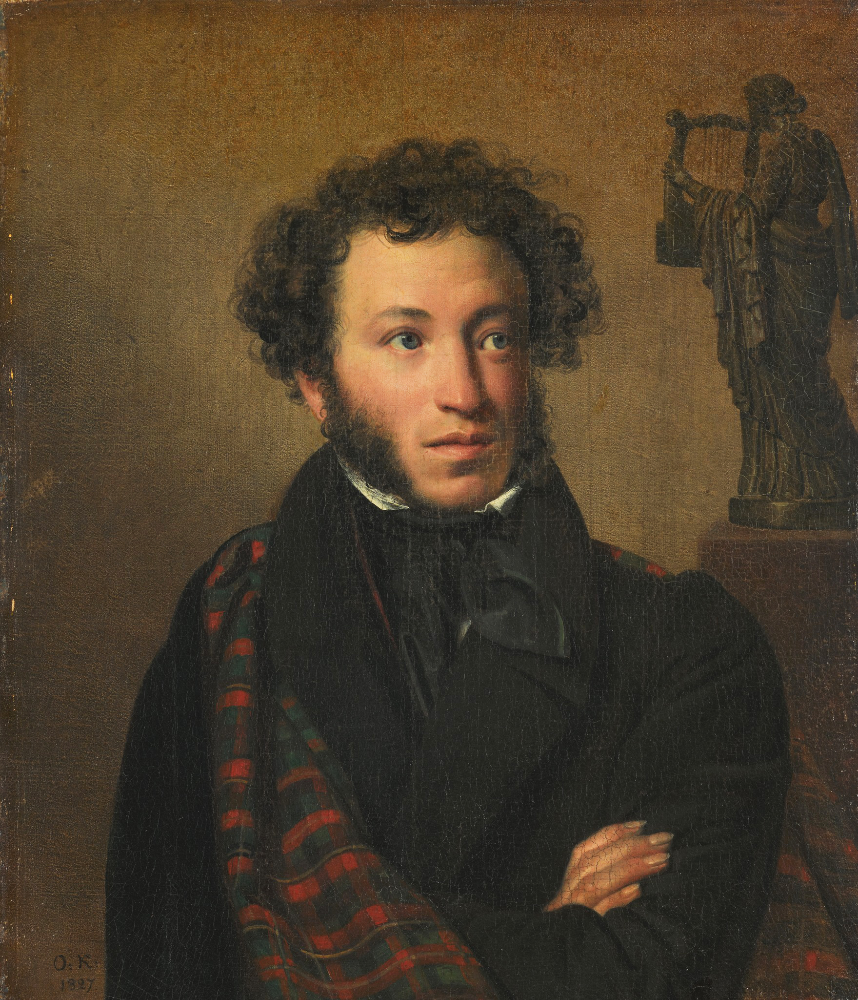

А.С.Пушкин

Александр Сергеевич Пушкин
Биография
Происхождение
Происхождение Александра Сергеевича Пушкина идёт от разветвлённого
нетитулованного дворянского рода Пушкиных, восходившего по генеалогической
легенде к «мужу честну» Ратше[7][~ 3]. Пушкин неоднократно писал о своей
родословной в стихах и прозе; он видел в своих предках образец истинной
«аристократии», древнего рода, честно служившего отечеству, но не снискавшего
благосклонности правителей и «гонимого». Не раз он обращался (в
том числе в художественной форме) и к образу своего прадеда по матери — африканца Абрама
Петровича Ганнибала, ставшего слугой и воспитанником Петра I, а потом военным
инженером и генералом[9].
В XVII веке предки Пушкина по отцу не поднимались выше придворного чина
стольника. Прадед, живший в эпоху Петра I, Александр Петрович Пушкин, был
сержантом гвардии и в 1725 году в припадке безумия убил свою жену; дед, Лев
Александрович, был полковником артиллерии, капитаном гвардии. Отец — Сергей
Львович Пушкин (1770—1848), светский острослов и поэт-любитель.
Мать Пушкина — Надежда Осиповна (1775—1836), внучка Ганнибала. Дядя по
отцу, Василий Львович (1766—1830), был известным поэтом круга Карамзина. Из детей
Сергея Львовича и Надежды Осиповны, кроме Александра, выжили дочь Ольга (в
замужестве Павлищева, 1797—1868) и сын Лев (1805—1852)[10].
Молодость
Из лицея Пушкин был выпущен 9 июня 1817 года в чине коллежского секретаря (10-го
класса, по Табели о рангах)[29], 13 июня высочайшим указом был определён в Коллегию
иностранных дел и 15 июня принёс присягу, подписав бланк клятвенного обещания
императору[30].
В это время отец передал Александру своего дворового крепостного Никиту, знавшего
Сашу с первых дней, ставшего ему настоящим другом и прошедшего с ним
практически весь жизненный путь вплоть до последнего дня, кроме года Михайловской
ссылки[31].
Пушкин становится постоянным посетителем театра, принимает участие в заседаниях «Арзамаса»
(принят он был туда заочно, ещё учеником Лицея, и получил кличку «Сверчок»)[32], в 1819 году
вступает в литературно-театральное общество «Зелёная лампа», которым руководит «Союз
благоденствия» (см. Декабристы)[33].
Не участвуя в деятельности первых тайных организаций, Пушкин тем не менее связан дружескими
узами со многими активными членами декабристских обществ, пишет политические эпиграммы и стихи
«К Чаадаеву» («Любви, надежды, тихой славы…», 1818), «Вольность» (1818), «Н. Я. Плюсковой» (1818),
«Деревня» (1819), распространявшиеся в списках.
В эти годы Пушкин работает над поэмой «Руслан и Людмила», начатой в Лицее и отвечавшей программным
установкам литературного общества «Арзамас» о необходимости создания национальной богатырской поэмы.
Поэма опубликована в мае 1820 года (по спискам была известна ранее) и вызвала различные, не всегда
благожелательные, отклики. Уже после высылки Пушкина вокруг поэмы разгорелись споры[34]. Некоторые
критики были возмущены снижением высокого канона. Смешение в «Руслане и Людмиле» русско-французских
приёмов словесного выражения с просторечием и фольклорной стилистикой вызвало упрёки и со стороны
защитников демократической народности в литературе. Такие нарекания содержало письмо Д. Зыкова,
литературного последователя Катенина, опубликованное в «Сыне отечества»[35][36].
Гибель
Бесконечные переговоры с зятем о разделе имения после смерти матери, заботы по издательским делам,
долги, и, главное, ставшее нарочито явным ухаживание кавалергарда Дантеса за его женой, повлёкшее
за собой пересуды в светском обществе, были причиной угнетённого состояния Пушкина осенью 1836 года.
3 ноября его друзьям[~ 8] был разослан анонимный пасквиль с оскорбительными намёками в адрес
Натальи Николаевны. Пушкин, узнавший о письмах на следующий день, был уверен, что они — дело рук
Дантеса и его приёмного отца Геккерна. Вечером 4 ноября он послал вызов на дуэль Дантесу. Геккерн
(после двух встреч с Пушкиным) добился отсрочки дуэли на две недели. Усилиями друзей поэта и,
прежде всего, Жуковского и тётки Натальи Николаевны фрейлины Екатерины Загряжской, дуэль удалось
предотвратить. 17 ноября Дантес сделал предложение сестре Натальи Николаевны, Екатерине Гончаровой.
В тот же день Пушкин послал своему секунданту Владимиру Соллогубу письмо с отказом от дуэли[99].
Брак не разрешил конфликта. Дантес, встречаясь с Натальей Николаевной в свете, преследовал её.
Распускались слухи о том, что Дантес женился на сестре Пушкиной, чтобы спасти репутацию Натальи
Николаевны. По свидетельству Константина Данзаса, жена предлагала Пушкину оставить на время Петербург,
но тот, «потеряв всякое терпение, решил кончить иначе»[100]. Пушкин послал 26 января (7 февраля)
1837 года Луи Геккерну «в высшей степени оскорбительное письмо»[101]. Единственным ответом на него
мог быть только вызов на дуэль, и Пушкин это знал. Формальный вызов на дуэль от Геккерна, одобренный
Дантесом, был получен Пушкиным в тот же день через атташе французского посольства виконта д’Аршиака.
Так как Геккерн был послом иностранного государства, он не мог драться на дуэли — это означало бы
немедленный крах его карьеры.
Дуэль с Дантесом состоялась 27 января на Чёрной Речке. Дантес выстрелил первым и тяжело ранил Пушкина:
пуля перебила шейку бедра и проникла в живот. Для того времени ранение было смертельным. Пушкин
узнал об этом в тот же день у себя дома от лейб-медика Арендта, который, уступая его настояниям,
не скрывал истинного положения дел. Уже раненным Пушкин стрелял в Дантеса, легко ранив того.
Творчество Пушкина
Память о Пушкине
В разных городах России и мира установлены десятки памятников Пушкину. Музеи, посвящённые жизни и
творчеству поэта, находятся в Москве, Санкт-Петербурге, Пушкиногорском районе, Новгороде, Торжке,
Кишинёве, Гурзуфе[183], Одессе, Вильнюсе, в Бродзянах (Словакия) и других городах. Именем Пушкина
назван бывший город Царское Село и ряд других населённых пунктов. Подробнее: см. память о Пушкине.
По данным опросов общественного мнения в России, проведённых Левада-Центром 12—18 декабря 2019 года
с участием 1608 человек старше 18 лет в 137 населённых пунктах 50 регионов при помощи личных интервью,
А. С. Пушкин — самый значимый писатель России 2019 года[184].
В Торжке Тверской области находится Музей А. С. Пушкина, который посвящен проездам поэта по тракту
Санкт-Петербург — Москва, его дорожным впечатлениям и отражаению впечатлений в его произведениях.
В д. Берново Старицкого р-на Тверской области расположен ещё один Музей А. С. Пушкина, который
находится в усадебном доме Вульфов и посвящен пребыванию поэта на Старицкой земле.
Музеи являются филиалами Тверского государственного объединённого музея.
Одна из площадей Дрездена носит имя Пушкина (Alexander-Puschkin-Platz).
Естественнонаучные взгляды Пушкина
Академик М. Алексеев в труде «Пушкин и наука его времени»[157] говорил о необходимости изучать вопрос
об отношении Пушкина к естественным наукам[158]. Пушкин, по мнению Алексеева, верил в науку и был
далёк от односторонних положительных или отрицательных её оценок[159]. Пушкин следил за развитием
науки, о чём свидетельствуют, например, его слова в предисловии к изданию восьмой и девятой глав
«Евгения Онегина»: «…открытия великих представителей старинной астрономии, физики, медицины и
философии состарились и каждый день заменяются другими»[160].
Во время учёбы в Царскосельском лицее Пушкин, как и другие лицеисты (Илличевский, Корф, Дельвиг),
противопоставлял науку поэзии, но в «Отрывках из писем, мыслей и замечаний» (1827) он уже утверждал,
что вдохновение требуется как в поэзии, так и в геометрии[161]. Алексеев находит сходство этого
утверждения с произнесённой в 1826 году речью Н. Лобачевского о воображаемой геометрии[162]. Примером
разрешения конфликта науки и поэзии Пушкин считал творчество М. Ломоносова, который, по словам Пушкина, «обнял все отрасли просвещения»: историю, риторику, химию, минералогию, поэзию[163].
Пушкин интересовался астрономией: в частности, в его библиотеке находилась книга английского астронома
Д. Гершеля[164]. К фрагменту о недвижной земле в своих «Подражаниях Корану» (1824) Пушкин добавил
примечание: «Плохая физика; но зато какая смелая поэзия!»[165]. Этой же теме посвящена эпиграмма
«Движение» («Движенья нет, сказал мудрец брадатый…»; 1825), в которой Пушкин, по предположению
Алексеева, полемизирует с идеалистической философией В. Одоевского и изображает историю европейской
науки от античности до Возрождения[166].
Пушкин был знаком с изобретателем электромагнитного телеграфа П. Шиллингом, и с этим знакомством
может быть связано появление отрывка «О сколько нам открытий чудных…» (1829), в котором проявилась
вера в автора в могущество разума и который, по словам академика С. Вавилова, «свидетельствует о
проникновенном понимании Пушкиным методов научного творчества»[167]. Упоминание вечного двигателя
в «Сценах из рыцарских времён» (1835) может быть связано с сообщениями об изобретении электродвигателя,
который в 1834 году создал Б. Якоби[168]. В повести «Пиковая дама» упоминается гальванизм, под которым
тогда понимался электрический ток, а также «Монгольфьеров шар и Месмеров магнетизм», которые
вспоминаются главному герою, по профессии инженеру, при взгляде на комнату графини[169]. В «Евгении
Онегине» (7, XXXIII) говорится о «философических таблицах», то есть о книге французского математика
Ш. Дюпена «Производительные и торговые силы Франции» (1827), в которой приводятся статистические
таблицы, показывающие данные об экономике различных европейских государств[170].
Хотя Пушкин не дожил до открытия первой железной дороги в России, и эта тема не отразилась в его
поэзии, но он собирался печатать в своём журнале статью инженера М. Волкова в защиту строительства
железных дорог[171]. Сам Пушкин в письме Одоевскому сделал «смелое техническое предложение» о
необходимости создания машины для очистки железных дорог от снега, то есть механического
снегоочистителя[172].
Техпотдержка
Р.Беларусь,г.Миснк